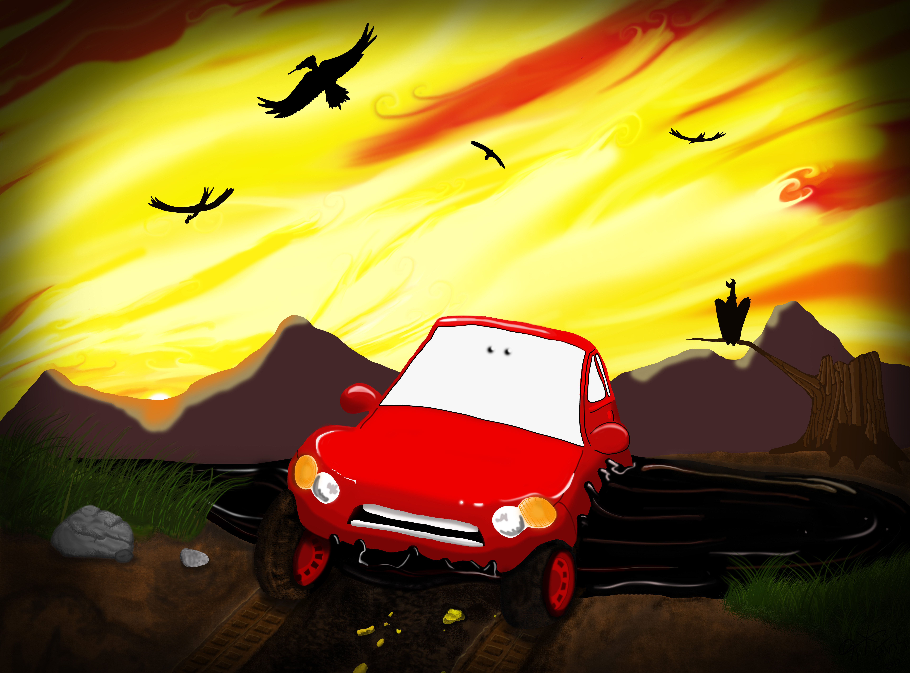

Alex Freundlich



FRONT Triennial Artist Run Spaces Panel Discussion Notes (Post) We got there nine minutes late and most of the chairs were taken by audience members but there were three, aisle seat, the seat next to it the seat next to that, that we took, about four or five rows away from the panel. It was a small room and the panel was left to right Prairie, What Pipeline, The Muted Horn, Basketshop, and The Suburban, with the moderator seat to the far left in the gap between the panel and the audience, almost forming a curve towards us viewers. Prairie, based in Chicago, talked about their mission to host programming about identity and ecology, queer enviro art and what not, the two young men who run the space talked about the emptiness felt by the art community in Chicago when artist run spaces leave and that was the void their gallery opened in response to. What Pipeline, aside from The Muted Horn, was the only space I knew about before and also the reason I wanted to go to the panel discussion, so I certainly did go in with the expectation to like them the most though I swear I was ready to be dissapointed! But I wasn’t and they were incredible. Alivia and Daniel seemed like they had done this sort of thing a lot. Daniel was usually sitting back and occasionally giving responses but Alivia usually spoke over him which he seemed unphased by - it was a cute dynamic. She was opinionated and certain about where she stood. Daniel seemed similarly certain. What appealed to me the most was that they fundamentally believe contemporary art in a white space is something the residents of Detroit deserve to have access to. Not artists coming to Detroit on a grant bending their practice, or completely leaving behind their practice, to make some work about this city they have no business stating their opinion on (which is so often how contemporary artists show work in Detroit, - Alivia called this sort of interaction “insulting”). Instead they just want to bring artists from other countries and other huge art cities of the US to Detroit and also vice versa. They show Detroit artists frequently and make it their business to expose those artists to other cities. Also there is a huge element of collaboration between both of them and the artists who are showing work in their space. They all help each other instal and finish works. I really respected that they care a great deal about perfection in the execution of a show and how the work is displayed. For one exhibit of a documentary style film about a defunct lesbian strip club scene in LA, they invested their own money in converting the space into a blackbox theater with a fantastic sound system. This is also something crucial for me in showing work. It needs to be perfect or don’t do it at all. A fundamental element of their space is that they only put on shows they truly are interested in, mainly because it involves a lot of work and they receive basically nothing for it. They do not pay attention to audience. There was an interesting element of the discussion based around audience. Michelle of The Suburban, the elder of the panel who also seems like a superstar (she has lots of grad school babies under her wings) was shitting on the idea of openings to which the other younger panelists replied that those are usually where 50%-80% of the audience arrives. But the interesting thing was that different artists and different programs fold in other audiences and communities into the usually art snob variety that show up to these spaces. For example, the documentary that What Pipeline screened brought in a huge number of Detroit black lesbians that would otherwise not come to the space. This seemed like a theme for the galleries (other than Basketshop but they clearly have a lot to learn). Also they all have two or three jobs on the side and their own studio careers to worry about, which I think brings about this notion of commitment to the space and work that is shown there. They work fucking hard for this to happen, and almost come to think of the programming and the space as an artwork in and of itself. The question becomes, is it worth doing ourselves? As was mentioned by a member of Prairie, after grad school everyone seems expected to start an artist run space. Fuck that! Also Daniel suggested that running the space was a far better education than a graduate program.